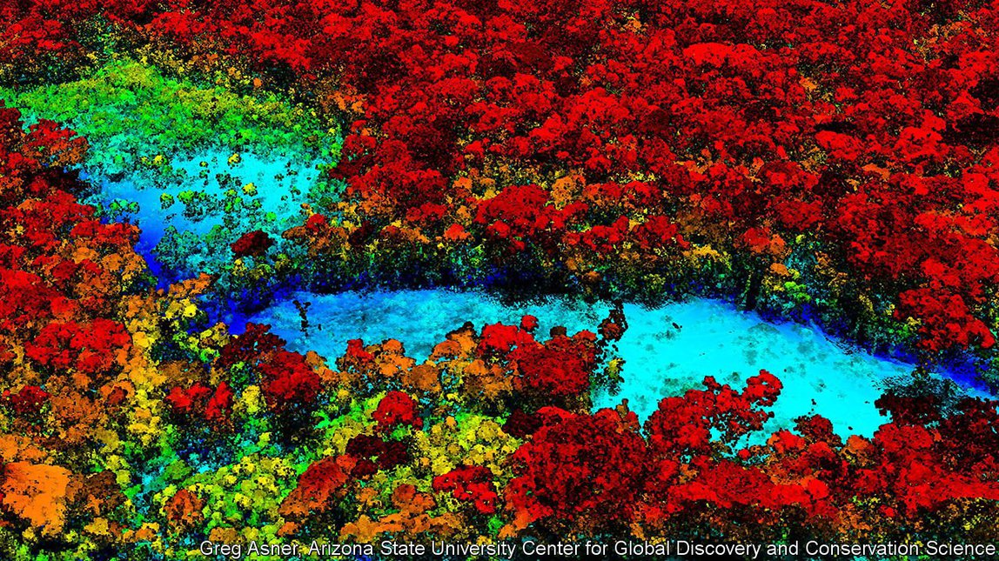
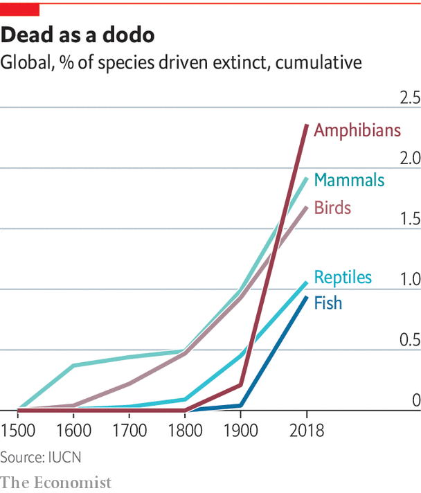
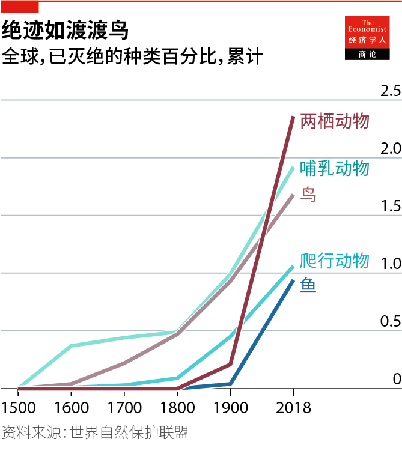

2021-07-03T16:22:53+00:00
Sensors and sensibility
传感器和感知力
傳感器和感知力
All kinds of new technology are being used to monitor the natural world
各种各样的新技术被用于监测自然界
各種各樣的新技術被用於監測自然界
Smartphone components have made sensors cheaper, and machine learning can help analyse the resulting data
智能手机组件使传感器变得更便宜，而机器学习可以帮助分析收集到的数据【专题报道《保护生态多样性》系列之二】
智能手機組件使傳感器變得更便宜，而機器學習可以幫助分析收集到的數據【專題報道《保護生態多樣性》系列之二】
THE NEW FOREST CICADA had not been seen in seven years when it caught the attention of Alex Rogers, an ecologist and computer scientist at the University of Oxford. The insect is the only cicada native to the British Isles. It spends 7-8 years underground as a nymph, then emerges, reproduces and dies within six weeks. During its short adult life, it produces a high-pitched hiss that would make it easier to detect, were it not at the upper limit of human hearing. Its call is audible to children but not to most adults. It can, however, be picked up by smartphone microphones. This led to the invention of AudioMoth, an “acoustic logger” that can be set to listen for a particular sound and record it.
当新森林蝉吸引到牛津大学生态学家、计算机科学家亚历克斯·罗杰斯（Alex Rogers）的注意时，它已经销声匿迹七年了。这种昆虫是唯一一种原产于不列颠群岛的蝉。在若虫期它会在地下度过七八年，然后在六周内出土，繁殖，死去。在它短暂的成年期，它会发出尖锐的嘶嘶声，如果不是因为已经触及人类听力上限，它会更容易被发现。孩子们可以听到它的叫声，大多数成年人都听不到。但是，它可以被智能手机的麦克风拾取。一种名为“音蛾”（AudioMoth）的发明由此问世，这种“声学记录器”可以被设置成听取并记录特定的声音。
當新森林蟬吸引到牛津大學生態學家、計算機科學家亞歷克斯·羅傑斯（Alex Rogers）的注意時，它已經銷聲匿跡七年了。這種昆蟲是唯一一種原產於不列顛群島的蟬。在若蟲期它會在地下度過七八年，然後在六周內出土，繁殖，死去。在它短暫的成年期，它會發出尖銳的嘶嘶聲，如果不是因為已經觸及人類聽力上限，它會更容易被發現。孩子們可以聽到它的叫聲，大多數成年人都聽不到。但是，它可以被智能手機的麥克風拾取。一種名為“音蛾”（AudioMoth）的發明由此問世，這種“聲學記錄器”可以被設置成聽取並記錄特定的聲音。
The device takes its name from the fact that moths can hear sounds across a wide frequency spectrum. It is roughly 60mm square and 15mm thick and includes a smartphone microphone, a memory card and a basic processing chip, powered by three AA batteries. Dr Rogers’s startup, Open Acoustic Devices, sells them for $60 through a group-purchasing scheme which helps keep costs low. At that price, “you can deploy many more devices, you can post them out to people and if they get lost or stolen, it doesn’t really matter,” says Dr Rogers. To date, some 30,000 AudioMoths have been scattered around the globe. A smaller version has just been launched and is being incorporated into an experiment to study how African carnivores are responding to warmer temperatures by monitoring the sounds they make, such as panting.
这种设备会有这样的名字，是因为飞蛾可以听到很宽的频率范围内的声音。它约60平方毫米大、15毫米厚，包括一个智能手机麦克风、一张存储卡和一个基本处理芯片，由三节AA电池供电。罗杰斯博士的创业公司“公开声学设备”（Open Acoustic Devices）以60美元的团购价格出售它们，这有助于降低人们的使用成本。以这个价格，“你可以部署更多设备，可以把它们寄送给人们，如果弄丢了或被偷了也没什么要紧。”罗杰斯说。迄今约有3万只音蛾散布在全球各地。一个较小的版本刚刚推出，目前正被纳入一项实验中，通过监测非洲食肉动物发出的声音（例如喘气）来研究它们对更温暖的气候做出什么反应。
這種設備會有這樣的名字，是因為飛蛾可以聽到很寬的頻率範圍內的聲音。它約60平方毫米大、15毫米厚，包括一個智能手機麥克風、一張存儲卡和一個基本處理芯片，由三節AA電池供電。羅傑斯博士的創業公司“公開聲學設備”（Open Acoustic Devices）以60美元的團購價格出售它們，這有助於降低人們的使用成本。以這個價格，“你可以部署更多設備，可以把它們寄送給人們，如果弄丟了或被偷了也沒什麼要緊。”羅傑斯說。迄今約有3萬隻音蛾散布在全球各地。一個較小的版本剛剛推出，目前正被納入一項實驗中，通過監測非洲食肉動物發出的聲音（例如喘氣）來研究它們對更溫暖的氣候做出什麼反應。
The AudioMoth is just one example of the explosion in the use of sensors to monitor ecosystems that has occurred in the past decade. Such devices are peppered across forests and national parks, attached to trees or the backs of animals. As well as recording environmental data, such as temperature or humidity, they also monitor the nature, number and movement of living things.
“音蛾”只是过去十年中大量运用传感器监控生态系统的一个例子。这些设备遍布森林和国家公园，附着在树上或动物的背上。除了记录温度或湿度等环境数据外，它们还监测生物的特性、数量和运动。
“音蛾”只是過去十年中大量運用傳感器監控生態系統的一個例子。這些設備遍布森林和國家公園，附着在樹上或動物的背上。除了記錄溫度或濕度等環境數據外，它們還監測生物的特性、數量和運動。
Motion-activated camera traps have captured images of the shyest snow leopards. Microphones monitor bat colonies, known to harbour diseases that can jump to humans, and coral reefs, whose crackling sounds are thought to broadcast their location to nearby fish. Radio tags attached to animals capture data about their behaviour as they go about their daily lives. The Icarus project has around 5,000 lightweight tags, weighing just five grams each, attached to animals on all continents. The sensors track the animals’ movements to within a few metres, along with the local temperature, pressure and humidity—all of which is relayed back to researchers via an antenna on the International Space Station.
动作激活的相机陷阱已经捕捉到了最神出鬼没的雪豹的影像。麦克风监测蝙蝠群落，众所周知它们携带着可能传染给人类的疾病。还有珊瑚礁，人们认为它们发出的咔嗒声是向附近的鱼广播自己的位置。附着在动物身上的无线电标签会在它们日常活动的过程中捕捉行为数据。伊卡洛斯（Icarus）项目有大约5000个轻巧的标签，每个仅5克重，佩戴在各大洲的动物身上。传感器会跟踪动物的运动（精确到几米），以及本地的温度、压力和湿度。所有这些信息都通过国际空间站上的天线传回给研究人员。
動作激活的相機陷阱已經捕捉到了最神出鬼沒的雪豹的影像。麥克風監測蝙蝠群落，眾所周知它們攜帶着可能傳染給人類的疾病。還有珊瑚礁，人們認為它們發出的咔嗒聲是向附近的魚廣播自己的位置。附着在動物身上的無線電標籤會在它們日常活動的過程中捕捉行為數據。伊卡洛斯（Icarus）項目有大約5000個輕巧的標籤，每個僅5克重，佩戴在各大洲的動物身上。傳感器會跟蹤動物的運動（精確到幾米），以及本地的溫度、壓力和濕度。所有這些信息都通過國際空間站上的天線傳回給研究人員。
Technologies borrowed from the smartphone industry, including batteries, cameras, microphones and chips, have helped make such sensors smaller, cheaper and more capable. Before the Icarus project developed its five-gram sensors, most radio tags weighed 15-20g. A future version will reduce the weight to just one gram, allowing the tags to be attached to even smaller creatures. Smartphone technology has also reduced the cost and size of camera traps. TrailGuard, a device developed by Resolve, an American environmental group, houses a tiny camera in a package the size of a Sharpie pen, which is hard to spot once it has been hung in a tree.
从智能手机行业借来的技术，包括电池、摄像头、麦克风和芯片，已帮助这类传感器变得更小、更便宜，也更强大。在“伊卡洛斯”项目开发出其5克重的传感器之前，大多数无线电标签的重量在15到20克。未来的版本会轻至1克，这样标签就可以贴到更小的生物身上。智能手机技术也降低了相机陷阱的成本和尺寸。由美国环保组织Resolve开发的设备“踪迹警卫”（TrailGuard）在一个锐意记号笔大小的套件中藏了一个微型相机，挂到树上很难被发现。
從智能手機行業借來的技術，包括電池、攝像頭、麥克風和芯片，已幫助這類傳感器變得更小、更便宜，也更強大。在“伊卡洛斯”項目開發出其5克重的傳感器之前，大多數無線電標籤的重量在15到20克。未來的版本會輕至1克，這樣標籤就可以貼到更小的生物身上。智能手機技術也降低了相機陷阱的成本和尺寸。由美國環保組織Resolve開發的設備“蹤跡警衛”（TrailGuard）在一個銳意記號筆大小的套件中藏了一個微型相機，掛到樹上很難被發現。
Another hot technology, machine learning, has revolutionised the task of scanning through the resulting sound recordings, images and other readings, many of which are false alarms. Working with researchers in artificial intelligence, conservationists can rely on algorithms to do the recognising for them. Big tech firms, including Google and Microsoft, are also getting involved. Wildlife Insights, a collaboration of seven large conservation organisations, with support from Google, is trying to create a single space where all camera traps will log their data (its database currently counts 16,652 camera-trap projects in 44 countries). Its machine-learning models can filter out the blank images that make up the majority of camera-trap pictures and identify hundreds of species in the remaining ones. Wild Me, an NGO based in Oregon, has algorithms for 53 species, capable of distinguishing between individual animals based on their stripes, spots or wrinkles.
另一项热门技术机器学习则彻底改变了筛选所获的录音、图像和其他读数这项任务，这些信息包含大量虚假警报。与人工智能研究人员合作后，生态保护主义者可以依赖算法来识别它们。包括谷歌和微软在内的大型科技公司也参与其中。“野生动物观察”（Wildlife Insights）是七个大型生态保护组织组成的联合机构，正在谷歌的支持下尝试创建一个供所有相机陷阱记录数据的单一空间（其数据库目前共包含44个国家和地区的16,652个相机陷阱项目）。它的机器学习模型可以过滤掉构成相机陷阱大部分画面的空白图像，并在剩余的图像中识别成百上千个物种。位于俄勒冈州的非政府组织Wild Me用算法识别53个动物物种，能根据条纹、斑点或皮肤褶皱来区分各个动物。
另一項熱門技術機器學習則徹底改變了篩選所獲的錄音、圖像和其他讀數這項任務，這些信息包含大量虛假警報。與人工智能研究人員合作後，生態保護主義者可以依賴算法來識別它們。包括谷歌和微軟在內的大型科技公司也參與其中。“野生動物觀察”（Wildlife Insights）是七個大型生態保護組織組成的聯合機構，正在谷歌的支持下嘗試創建一個供所有相機陷阱記錄數據的單一空間（其數據庫目前共包含44個國家和地區的16,652個相機陷阱項目）。它的機器學習模型可以過濾掉構成相機陷阱大部分畫面的空白圖像，並在剩餘的圖像中識別成百上千個物種。位於俄勒岡州的非政府組織Wild Me用算法識別53個動物物種，能根據條紋、斑點或皮膚褶皺來區分各個動物。
As sensors get smarter, they are increasingly able to process data themselves—at the network edge, rather than centrally in the cloud—which reduces the need to transmit or store data unnecessarily. If sensors are networked, they can also raise the alarm right away if they spot something important. TrailGuard is different from most camera traps in that it is built to identify poachers, rather than wildlife. During its demonstration phase, it was installed in one of Africa’s largest wildlife parks, and detected two humans as they entered the area. Within a minute, images had been sent to the park’s headquarters, where staff confirmed that they showed two poachers, who were later arrested. Relaying data back to researchers can be tricky, however, as wildlife surveys are often carried out in remote areas with little or no mobile-network coverage. Sending data via satellite works well, but is expensive—though prices may fall as new constellations in low-Earth orbit become available.
随着传感器变得越来越智能，它们自己处理数据的能力也越来越强。数据处理发生在网络边缘而不是中央云，这就减少了不必要的数据传输或存储。如果传感器都联网，它们还可以在发现重要情况时即刻发出警报。“踪迹警卫”与大多数相机陷阱的不同之处在于它识别的是偷猎者而非野生动物。它在演示阶段被安装在非洲最大的野生动物园之一里，在两个人入园时发现了他们。不到一分钟，图像就被发送到动物园总部，工作人员核实图像展示的是两名偷猎者，他们稍后被捕。不过，要把数据传回给研究人员有时并不容易，因为野生动物考察通常在很少或没有移动网络覆盖的偏远地区进行。通过卫星发送数据的效果很好，但很贵。不过随着近地轨道上新卫星群的出现，价格可能会下跌。
隨着傳感器變得越來越智能，它們自己處理數據的能力也越來越強。數據處理髮生在網絡邊緣而不是中央雲，這就減少了不必要的數據傳輸或存儲。如果傳感器都聯網，它們還可以在發現重要情況時即刻發出警報。“蹤跡警衛”與大多數相機陷阱的不同之處在於它識別的是偷獵者而非野生動物。它在演示階段被安裝在非洲最大的野生動物園之一里，在兩個人入園時發現了他們。不到一分鐘，圖像就被發送到動物園總部，工作人員核實圖像展示的是兩名偷獵者，他們稍後被捕。不過，要把數據傳回給研究人員有時並不容易，因為野生動物考察通常在很少或沒有移動網絡覆蓋的偏遠地區進行。通過衛星發送數據的效果很好，但很貴。不過隨着近地軌道上新衛星群的出現，價格可能會下跌。
Putting devices on the ground, or attached to animals, is not the only way to monitor ecosystems. It can also be done from the air or from space. Regional, and even global, snapshots can be generated using instruments mounted on planes or by scanning the Earth using satellites. The dozens of Earth-observation instruments orbiting the planet can collect information about land use, detect blooms in oceanic plankton, monitor emissions from forest fires, and track oil spills or the break-up of polar ice sheets. Remote sensing has long been used by environmental groups keen to monitor deforestation rates in remote regions.
在地面上安装设备或让动物佩戴它们并不是监测生态系统的唯一途径。它也可以从高空或太空中完成。使用安装在飞机上的仪器或使用卫星扫描地球可以生成区域甚至全球快照。环绕地球运行的几十个地球观测仪器可以收集有关土地使用的信息，探测海洋浮游生物大量繁殖，监测森林火灾的碳排放，追踪石油泄漏或极地冰盖破裂。遥感技术长期以来被热衷于监测偏远地区森林砍伐率的环保组织使用。
在地面上安裝設備或讓動物佩戴它們並不是監測生態系統的唯一途徑。它也可以從高空或太空中完成。使用安裝在飛機上的儀器或使用衛星掃描地球可以生成區域甚至全球快照。環繞地球運行的幾十個地球觀測儀器可以收集有關土地使用的信息，探測海洋浮游生物大量繁殖，監測森林火災的碳排放，追蹤石油泄漏或極地冰蓋破裂。遙感技術長期以來被熱衷於監測偏遠地區森林砍伐率的環保組織使用。
But satellite imagery can be flawed. Viewed from above, some tropical tree plantations can look like native forest. And although spotting large areas that have been clear-cut is simple, identifying regions where selective logging, clearing of underbrush or overhunting of seed-dispersing animals is degrading the integrity of a forest is much more difficult. A study published in Nature in 2020 found that only 40% of remaining forests have high integrity; the remaining 60% have been degraded in some way. In 2019, an international team of ecologists and forestry experts showed that taking into account the degradation of seemingly intact forests increased estimates of forestry emissions six-fold, compared with just looking at emissions caused by clear-cutting. This research relied on a combination of remote-sensing data with numerical modelling and on-the-ground fieldwork.
但卫星图像可能存在缺陷。从高空俯瞰，一些热带树木种植园会好像原始森林。而虽然要发现大片已被全面砍伐的区域很简单，要识别那些正因选择性伐木、清除灌木丛或传播种子的动物被过度捕猎而导致完整性降低的森林区块则要困难得多。2020年发表在《自然》杂志上的一项研究发现，地球剩余的森林中仅40%具高度完整性；其余60%已经发生某种程度的退化。2019年，一个由生态学家和林业专家组成的国际团队表明，相比于仅考虑因森林清伐造成的排放量，如果把看似完整的森林的退化也计入考量，林业排放量的估计值将增加六倍。这项研究有赖于遥感数据与数值建模及实地考察的结合。
但衛星圖像可能存在缺陷。從高空俯瞰，一些熱帶樹木種植園會好像原始森林。而雖然要發現大片已被全面砍伐的區域很簡單，要識別那些正因選擇性伐木、清除灌木叢或傳播種子的動物被過度捕獵而導致完整性降低的森林區塊則要困難得多。2020年發表在《自然》雜誌上的一項研究發現，地球剩餘的森林中僅40%具高度完整性；其餘60%已經發生某種程度的退化。2019年，一個由生態學家和林業專家組成的國際團隊表明，相比於僅考慮因森林清伐造成的排放量，如果把看似完整的森林的退化也計入考量，林業排放量的估計值將增加六倍。這項研究有賴於遙感數據與數值建模及實地考察的結合。
Eyes in the sky
天空之眼
天空之眼
New tools to assess forests’ health are becoming available, the most important of which is LIDAR—a technique which is similar to radar except that it employs infrared laser light instead of radio waves, and can map out spaces in high resolution and in three dimensions. Pointed at a tree, it can generate a 3 D model of its entire structure, including the position of every branch to within a millimetre. Such data can be used to estimate the volume and mass of a tree, or an area of forest, and hence its carbon content.
评估森林健康的新工具正在出现，其中最重要的是激光雷达——一种类似于雷达的技术，除了它用的是红外激光而不是无线电波，并且可以以高分辨率三维绘制空间图。把它对准一棵树，可以生成再现其整个结构的三维模型，包括每根树枝的位置，精确至毫米。此类数据可用于估算一棵树或一片森林的体积和质量，从而估算其碳含量。
評估森林健康的新工具正在出現，其中最重要的是激光雷達——一種類似於雷達的技術，除了它用的是紅外激光而不是無線電波，並且可以以高分辨率三維繪製空間圖。把它對準一棵樹，可以生成再現其整個結構的三維模型，包括每根樹枝的位置，精確至毫米。此類數據可用於估算一棵樹或一片森林的體積和質量，從而估算其碳含量。
The Global Airborne Observatory takes this kind of 3D modelling one step further. The brainchild of Greg Asner of Arizona State University, it combines LIDAR with spectrometers and cameras mounted on a plane. Two high-powered laser beams fired out from beneath the plane sweep over the landscape, creating a detailed 3D model of everything underneath, from the treetops to the ground. At the same time, the spectrometers bounce light of various wavelengths off the foliage. Using a reference library containing thousands of dried and frozen plant samples, the team has worked out how to identify individual plant species from the spectroscopic data and determine their moisture content. The result is a detailed picture of the landscape showing the shape, size and species of individual trees, from which the carbon content and overall health of the forest can be determined.
全球机载天文台（Global Airborne Observatory）将这种三维建模更往前推进了一步。亚利桑那州立大学的格雷格·阿斯纳（Greg Asner）构建的这个实验室将激光雷达与安装在飞机上的光谱仪和相机结合起来。从飞机下方射出的两束高功率激光束扫过整个景观，为下方从树梢到地面的所有事物创建出细致的三维模型。与此同时，光谱仪从树叶上反射出各种波长的光。对照一个包含成千上万个干燥和冷冻植物样本的资料库，该团队已经研究出如何从光谱数据中识别单个植物物种并确定其水分含量。得到的结果是一幅详尽的景观图，显示每一棵树木的形状、大小和种类，以此判断整片森林的碳含量和总体健康状况。
全球機載天文台（Global Airborne Observatory）將這種三維建模更往前推進了一步。亞利桑那州立大學的格雷格·阿斯納（Greg Asner）構建的這個實驗室將激光雷達與安裝在飛機上的光譜儀和相機結合起來。從飛機下方射出的兩束高功率激光束掃過整個景觀，為下方從樹梢到地面的所有事物創建出細緻的三維模型。與此同時，光譜儀從樹葉上反射出各種波長的光。對照一個包含成千上萬個乾燥和冷凍植物樣本的資料庫，該團隊已經研究出如何從光譜數據中識別單個植物物種並確定其水分含量。得到的結果是一幅詳盡的景觀圖，顯示每一棵樹木的形狀、大小和種類，以此判斷整片森林的碳含量和總體健康狀況。
In May 2021, Dr Asner and his team launched a related tool focused on the oceans. Coral bleaching, caused by warmer seas, damages reefs. Thousands of associated species, from sponges to octopuses, depend on the health of their home reef. The Allen Coral Atlas uses high-resolution satellite imagery and machine learning to monitor bleaching events in real time by detecting changes in the reflectivity of reefs. A trial run, in Hawaii in 2019, identified bleaching that field surveys had missed. The hope is that by detecting it as it occurs, other causes of stress such as fishing can be reduced, giving reefs a better chance of recovery. ■
5月，阿斯纳博士和他的团队推出了一个相关的针对海洋的工具。海洋水温上升导致的珊瑚白化会破坏珊瑚礁。而从海绵到章鱼的数以千计的相关物种都依赖它们的珊瑚礁家园的健康。艾伦珊瑚礁地图集项目（Allen Coral Atlas）使用高分辨率的卫星图像及机器学习，通过检测珊瑚礁反射率的变化来实时监测白化现象。2019年在夏威夷开展的一次试运行发现了被实地考察遗漏的白化现象。研发人员希望，通过在白化发生时就发现它，可以减少捕鱼等其他压力源，增加珊瑚礁复原的机会。
5月，阿斯納博士和他的團隊推出了一個相關的針對海洋的工具。海洋水溫上升導致的珊瑚白化會破壞珊瑚礁。而從海綿到章魚的數以千計的相關物種都依賴它們的珊瑚礁家園的健康。艾倫珊瑚礁地圖集項目（Allen Coral Atlas）使用高分辨率的衛星圖像及機器學習，通過檢測珊瑚礁反射率的變化來實時監測白化現象。2019年在夏威夷開展的一次試運行發現了被實地考察遺漏的白化現象。研發人員希望，通過在白化發生時就發現它，可以減少捕魚等其他壓力源，增加珊瑚礁復原的機會。